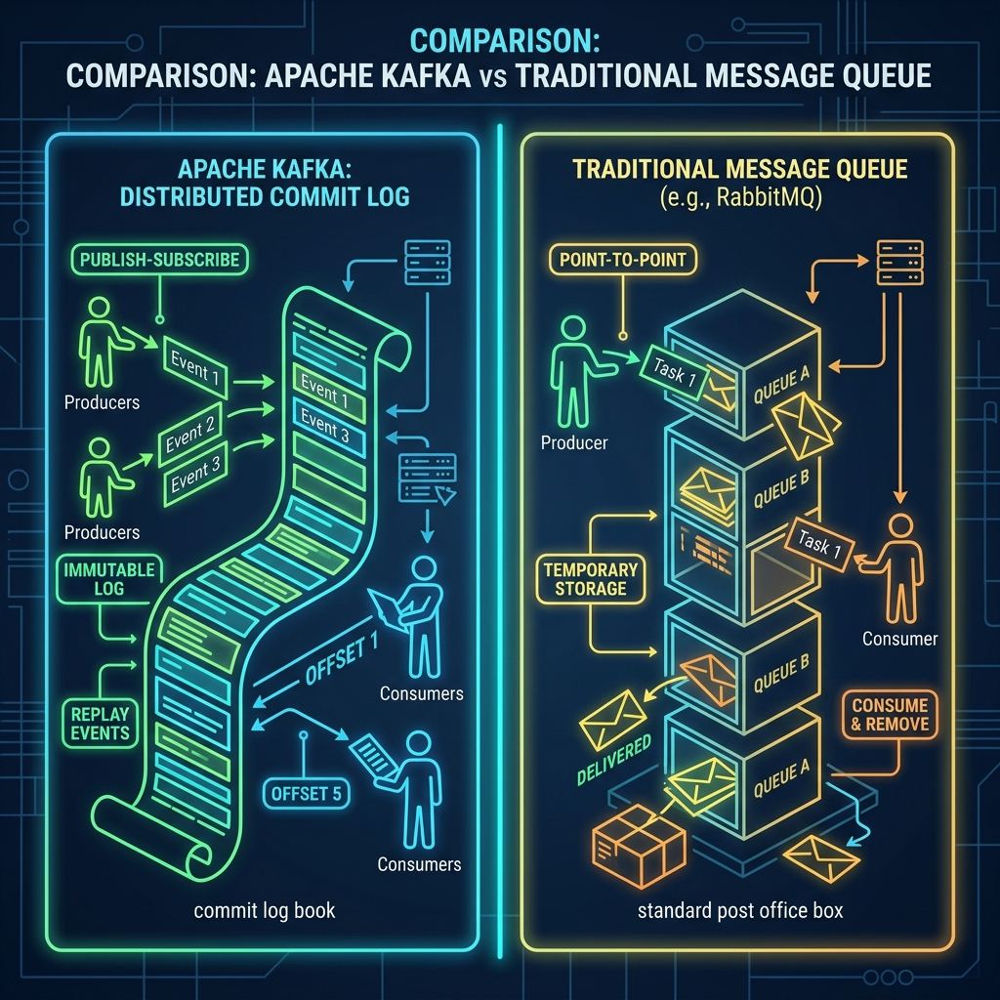

If you are building a system where different applications need to send messages to one another, you will quickly encounter two major technologies: RabbitMQ and Apache Kafka. Both are used to pass messages between systems, but they are built on completely different core philosophies.
Choosing the wrong one can lead to performance bottlenecks or complex code updates later. Let's compare them simply to see when you should choose a traditional message queue like RabbitMQ versus a distributed commit log like Kafka.

Imagine task management in an office:
- RabbitMQ is like a pile of Post-It Notes. When you have a task for someone, you write it on a Post-It and stick it on their desk. As soon as they complete the task, they rip up the Post-It and throw it in the trash. Once it's done, it's gone forever.
- Kafka is like a continuous Ledger Book. Every task and event is written sequentially on page after page. When a worker finishes a task, they put a checkmark next to the line (updating their offset bookmark). The line remains written in the ledger. If someone wants to inspect what happened last week, or if a new employee joins and needs to replay the entire history to get up to speed, they can simply flip back the pages and read it again.
Key Architectural Differences
| Feature | RabbitMQ | Apache Kafka |
|---|---|---|
| Core Model | Queue-based (smart broker, dumb consumer) | Log-based (dumb broker, smart consumer) |
| Data Retention | Deleted immediately after consumption | Retained based on size/time policies |
| Message Replay | No (message is deleted) | Yes (can reset offset bookmarks) |
| Scaling Model | Vertical scaling (some clustering capabilities) | Horizontal scaling via partitions |
| Flow Model | Push-based (broker pushes to consumer) | Pull-based (consumer requests data at own pace) |
When Should You Choose RabbitMQ?
RabbitMQ is an excellent choice when you need complex routing logic, message priority, and quick setup. Choose RabbitMQ if:
- You need dynamic message routing (e.g., routing based on specific criteria like wildcard keys).
- You are building a task queue where jobs are distributed to workers, completed, and discarded.
- You need native support for features like message-level confirmation, dead-letter exchanges, and message priority.
When Should You Choose Apache Kafka?
Kafka shines when you have high-volume streams of data and need data persistence. Choose Kafka if:
- You are building event-driven microservices that need to share historical data.
- You need to process streams of real-time data (e.g., user activity clickstreams, IoT telemetry data).
- You want the ability to replay historical messages (e.g., re-running calculations or recovering from a service crash).
- You require extremely high throughput (millions of messages per second).
Conclusion
Instead of viewing Kafka and RabbitMQ as competitors, think of them as complementary tools. RabbitMQ is a highly capable Message Broker built for flexible, short-term routing, while Kafka is an Event Streaming Platform built as a durable, high-throughput distributed commit log. Match the tool to your architecture's core data flow pattern.